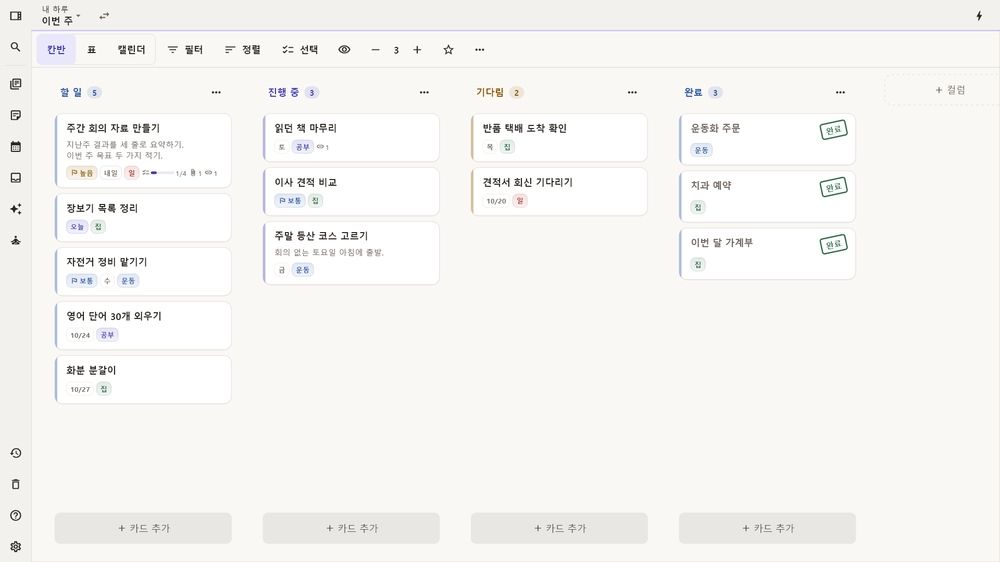
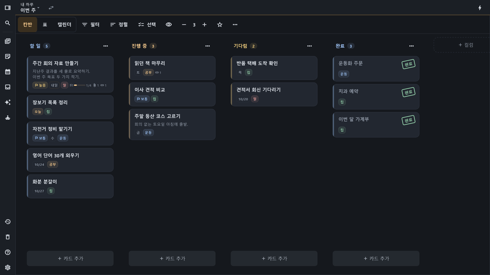
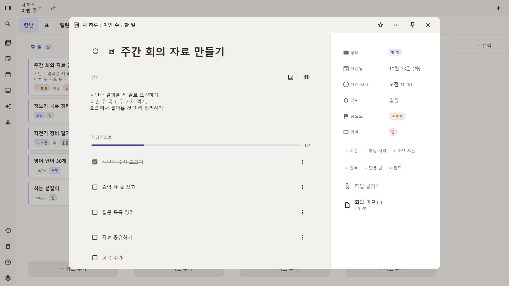
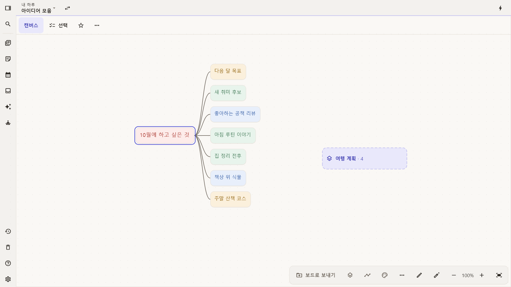
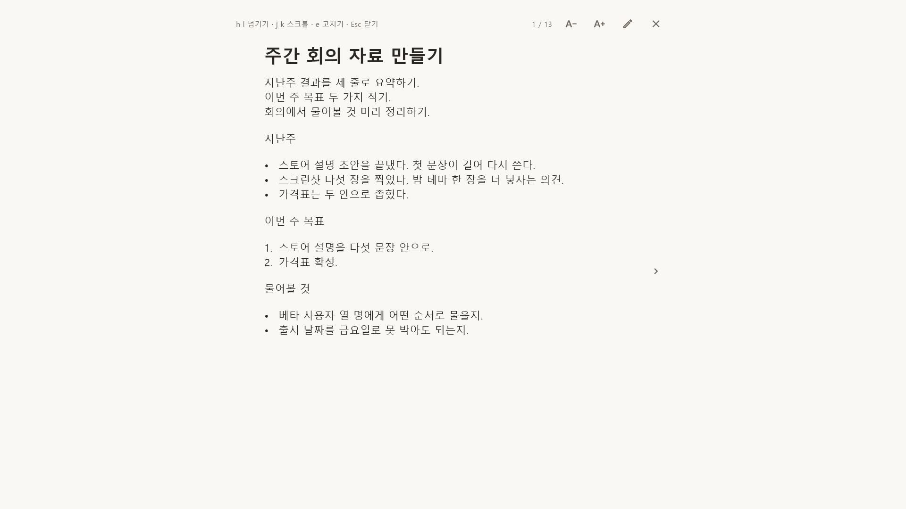
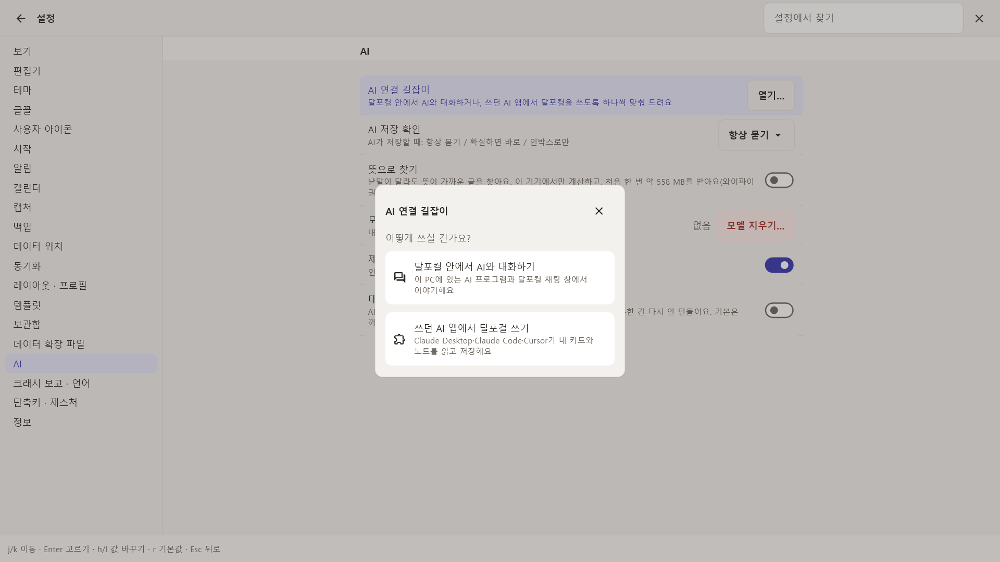

칸반 보드, 일을 굴리는 자리
할 일, 진행 중, 완료 사이로 카드를 옮기며 일을 끝냅니다. 같은 카드를 표로, 캘린더로, 루틴으로 바꿔 봅니다.
매일 하는 일은 루틴 보드에서 «오늘 했어요» 한 번이면 끝이에요.
- 칸반
- 표
- 캘린더
- 루틴
달포컬
생각은 캔버스에 툭, 할 일은 칸반으로. 노트와 캘린더까지 내 PC에.
Windows 앱. 한국 14,900원(출시 할인, 2027년 2월 28일까지), 해외 19.99달러. 자주 묻는 질문


할 일, 진행 중, 완료 사이로 카드를 옮기며 일을 끝냅니다. 같은 카드를 표로, 캘린더로, 루틴으로 바꿔 봅니다.
매일 하는 일은 루틴 보드에서 «오늘 했어요» 한 번이면 끝이에요.

떠오르는 대로 블록을 던져 두고, 선으로 연결하고, 펜으로 그립니다. 할 일이다 싶은 블록은 그대로 보드로 보냅니다.
바쁠 땐 단축키 하나로 인박스에 적어 두고, 나중에 보드로 나눠도 돼요.

프로젝트마다 노트, 할 일, 메모를 허브 하나에 모읍니다. 카드와 노트를 서로 링크하고, 마크다운으로 쓰고, vim 키로도 움직입니다.
집중 모드에서는 카드와 노트를 한 장씩 크게 보여 줍니다. 읽다가 그 자리에서 고치면 됩니다.

Claude Desktop, Claude Code, Cursor 같은 AI 앱이 내 카드와 노트를 읽고 쓰게 할 수 있습니다. 앱 안에서 바로 대화할 수도 있고요. 내 PC 모델을 쓰거나, 내 API 키로 AI 회사에 직접 연결합니다.
내 API 키를 쓰면 대화 글과 AI가 읽은 카드, 노트가 내가 고른 AI 회사로 나갑니다. 달스튜디오 서버는 지나지 않고, 키는 이 기기의 암호화 저장소에 보관합니다. 요금은 그 회사에 따로 냅니다.
연결 가이드가 한 단계씩 안내하고, 끄면 그 자리에서 끊깁니다.
«의미 검색»을 켜면 처음 한 번 모델(약 558MB)을 다운로드합니다. 그 뒤로는 단어가 달라도 뜻이 가까운 글을 기기 안에서 찾아 줍니다.

설치하자마자 계정 없이 씁니다. 보드와 카드와 노트는 전부 내 PC에 남습니다.
내 기기 하나를 서버로 켜면 다른 기기와 직접 연결해 동기화합니다. 데이터는 내 기기끼리만 주고받고, 달스튜디오 서버는 거치지 않습니다.
메모와 카드는 내 기기에 있습니다. 달포컬에는 운영자의 서버가 없고, 운영자는 내 데이터를 받지 않습니다.